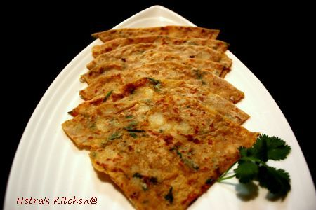
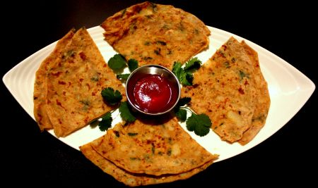

Spinach Paratha
Spinach Paratha
Preparation & Cooking: 15-20 mins
Serves 4-5 persons
Ingredients:
- 1 bunch palak finely chopped
- 2 cup whole wheat flour
- 2 tsp red chili powder
- 1/2 tsp turmeric powder
- 1 tsp cumin powder
- 1/2 tsp coriander powder
- 1 tsp cumin
- 1 tsp oregano(ajwan)
- 1 tsp garlic paste
- salt to taste
- oil for frying
- 1 cup water
Method:
- Heat the oil in pan and splutter jeera in it. Add finely cut palak saute for 2 minutes.
- Mix the palak in flour along with other ingredients except oil.
- First mix the flour well with spinach and then add water to make just like chapathi dough
- Make small balls out of dough and Pat it down with flour. Roll out circle shape little thicker parathas.
- Place on preheated pan, add some oil all the side.Cook the parathas both sides until golden spots appears.
- Serve hot with pickle or raita.

Aloo Paratha
Preparation & Cooking: 15-20 mins
Serves 4-5 persons
Ingredients:
- 2-3 medium boiled potato
- 2 cup whole wheat flour
- 2 tsp red chili powder
- 1/2 tsp turmeric powder
- 1 tsp cumin powder
- 1/2 coriander powder
- 1/2 amchoor powder
- 1 tsp cumin
- 1 tsp oregano(ajwan)
- 1 tsp garlic/ginger paste
- salt to taste
- oil for frying
- 1 cup water
Method:
- Add water in flour and make soft dough. Set aside, make the filling.
- Mix all ingredients except oil and mash it well. Make small ball out of the mix.
- Make small balls out of dough and Pat it down with flour.
- Now roll out half way and keep the stuffing ball inside, Seal the ends towards centre.
- Dust this in flour and roll out circle shape little thicker parathas.
- Place on preheated pan, add some oil all the side.Cook the parathas both sides until golden spots appears.
- Serve hot with pickle or raita.

Methi Paratha
Preparation & Cooking: 15-20 mins
Serves 4-5 persons
Ingredients:
- 1 cup finely chopped Methi
- 2 cup whole wheat flour
- 2 tbsp rice flour
- 2 tsp red chili powder
- 1/2 tsp turmeric powder
- 1 tsp cumin powder
- 1 tsp cumin
- 1 tsp garlic paste
- salt to taste
- oil for frying
- 1 cup water
Method:
- Mix all ingredients except oil and mix it well.
- Make small balls out of dough and Pat it down with flour and roll out circle shape little thicker parathas.
- Place on preheated pan, add some oil all the side.Cook the parathas both sides until golden spots appears.
- Serve hot with pickle or raita.

Paneer paratha
Preparation & Cooking: 15-20 mins
Serves 4-5 persons
ingredients for stuffing:
- 2 cups grated paneer
- 2 green chilies finely chopped
- 2 tbsp finely chopped coriander
- 1 tsp cumin powder
- salt to taste
For dough
- 2 cup whole wheat flour
- oil for frying
- 1 cup water
Method:
- Add water in flour and make soft dough. Set aside, make the stuffing.
- Mix all ingredients of stuffing and mix it well.Make small ball out of the mix.
- Make small balls out of dough and Pat it down with flour.
- Now roll out half way and keep the stuffing ball inside, Seal the ends towards centre.
- Dust this in flour and roll out circle shape little thicker parathas.
- Place on preheated pan, add some oil all the side.Cook the parathas both sides until golden spots appears.
- Serve hot with pickle or raita.
Mooli Paratha
Preparation & Cooking: 20-25 mins
Serves 4-5 persons
Ingredients:
- 1 cup Radish grated
- 2 cup whole wheat flour
- 1 finely chopped green chili
- 1/2 tsp red chili powder
- 1/2 tsp turmeric powder
- 1 tsp cumin
- 1 tsp oregano(ajwan)
- 1/2 tsp garlic paste
- 3 tbsp finely chopped coriander leaves
- salt to taste
- oil for frying
Method:
- Add water in flour and make soft dough. Set aside, make the stuffiing.
- Add little salt to grated mooli, keep that aside, later squeeze the water from it.
- Heat the oil in pan and splutter jeera, add finely chopped chilly, garlic saute for 2 minutes.
- Add the squeezed radish and other ingredientes, mix and fry well till radish becomes dry.
- When its cool, make small balls out of mix.
- Make same size balls out of dough and Pat it down with flour.
- Now roll out half way and keep the stuffing ball inside, Seal the ends towards centre.
- Dust this in flour and roll out circle shape little thicker parathas.
- Place on preheated pan, add some oil all the side.Cook the parathas both sides until golden spots appears.
- Serve hot with pickle or raita.
Bhatura
Preparation & Cooking: 20-25 mins
Serves persons:3-4
Ingredients:
- 2 cup whole wheat flour
- 1 cup maida
- 2 tbsp yoghurt
- 2 tsp sugar
- 2 tsp salt
- 1/2 baking soda
- 1 tbsp oil or butter
- 1/2 cup warm water
Method:
- Its better to start bhatura dough the night before.
- In wide large bowl add maida, sugar, baking soda and yoghurt. Mix it well and cover with a cloth for overnight fermentation.
- Next day, in other bowl add wheat flour,salt and fermented dough.Mix it well by warm water.
- Knead the dought by appling ghee or oil for 5 to 10 minutes.Keep covered for 3 hours.
- Make 10-12 balls and roll them into 5 inch discs.
- Deep fry in really hot oil.
- Serve hot with chole.
comments powered by